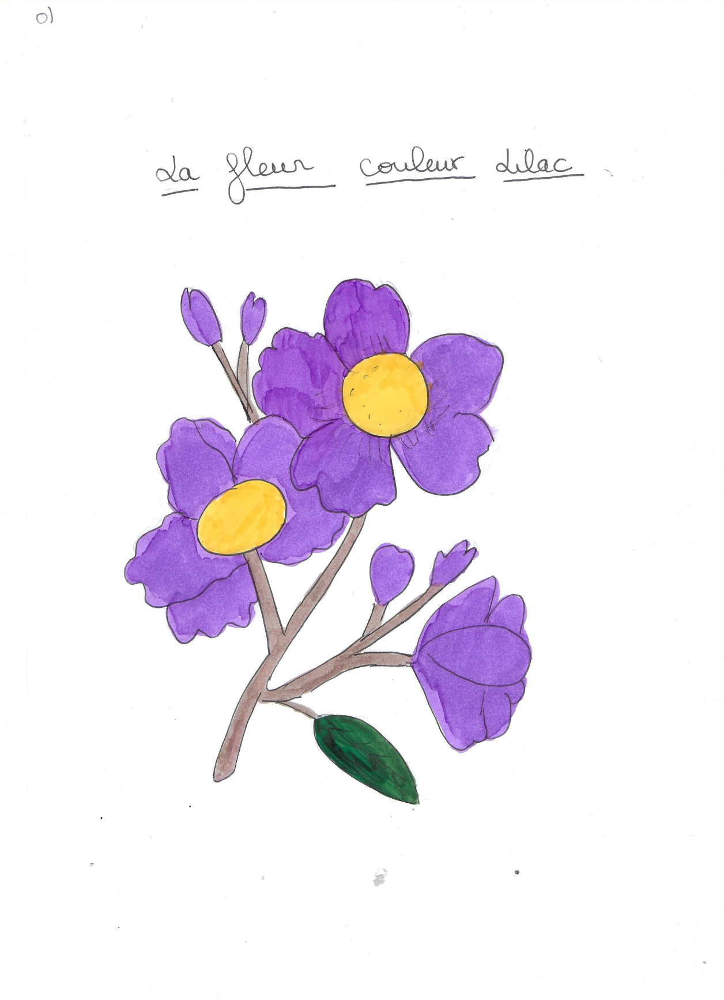

Hanté par un traumatisme d'enfance, Sachi est incapable de maîtriser son Éthéré, une créature liée à sa propre énergie vitale.
Pour lui, la bête est incontrôlable et terrifiante, le souvenir de l'accident ravivant sa peur.
Heureusement, il peut compter sur ses trois amis d'enfance, qui connaissent son histoire.
Ensemble, ils décident de l'aider à briser ce blocage.
Leurs liens forts vont être mis à l'épreuve à travers une série de défis, où Sachi devra affronter ses démons intérieurs avec le soutien inconditionnel de sa bande.